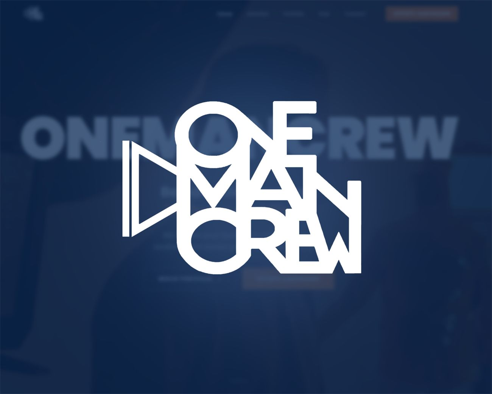

Website voor een
videograaf
Voor videoproductiebedrijf ONEMANCREW maakten we de website, de branding en de fotografie. In dit artikel lees je hoe je als videograaf of videomaker een site bouwt die opdrachten oplevert en niet alleen mooi is om naar te kijken.


Een videomaker verkoopt beeld. Toch hebben veel videografen een site die vooral uit tekst bestaat, of een losse pagina met een showreel en een e-mailadres. Dat is zonde, want de bezoeker is meestal een ondernemer of HR-manager die snel wil weten of jij zijn probleem kunt oplossen. Met die bezoeker in gedachten bouwden we de site van ONEMANCREW.
Over ONEMANCREW
ONEMANCREW is een videoproductiebedrijf uit de regio Alkmaar. Het maakt video voor werving, onboarding en instructie: wervingsvideo's voor vacatures, instructievideo's die kennis vastleggen en korte advertenties voor social media. De klanten zijn bedrijven die hun vacatures niet gevuld krijgen of te veel tijd kwijt zijn aan het inwerken van nieuwe mensen.
Wat we gebouwd hebben
We verzorgden de website, de branding en de fotografie. De vormgeving is donker en filmisch, zodat het werk zelf de aandacht krijgt. De opbouw van de homepage volgt de gedachtegang van een klant.
- Eerst het werk. Direct onder de opening staat het laatste project. Het uitgangspunt van de site is letterlijk: bekijk eerst het resultaat, lees daarna pas verder.
- Dan het probleem. Vacatures die te lang openstaan, onboarding die collega's tijd kost, instructies die niemand leest. De bezoeker herkent zich daarin voordat er iets verkocht wordt.
- Dan het aanbod. Drie soorten video, elk met een concreet doel en een duidelijke omschrijving van wat je krijgt.
- Eén volgende stap. Op elke plek waar een bezoeker overtuigd kan zijn, staat dezelfde knop: plan een kennismaking.
Bestaande klanten hebben een eigen ingang via het klantenportaal in het menu.
Wat hoort er op de website van een videograaf?
Je werk, zonder omweg
Niemand huurt een videomaker in op basis van een alinea over passie voor beeld. Zet je beste werk bovenaan en laat het snel laden. Kies liever drie sterke projecten dan dertig middelmatige. Vermeld bij elk project kort voor wie het was en waar de video voor dient.
Een aanbod dat een klant begrijpt
"Bedrijfsvideo" zegt weinig. "Een wervingsvideo van twee tot vier minuten voor je werkenbij-pagina, met vier korte versies voor LinkedIn" zegt alles. Hoe concreter je beschrijft wat iemand krijgt, hoe makkelijker de eerste mail of het eerste telefoontje wordt.
De taal van je klant
Jouw klant koopt geen video, maar een opgeloste vacature of een nieuwe medewerker die sneller zelfstandig werkt. Schrijf je teksten vanuit dat resultaat. De techniek, camera's en montage mogen op een pagina verderop.
Snelheid, ook met veel video
Video maakt een site snel zwaar. Daar letten we bij de bouw op: video's die pas laden wanneer ze in beeld komen, lichte voorbeeldafbeeldingen en hosting die het aankan. Een portfolio dat drie seconden op zich laat wachten, wordt niet bekeken.
Een gezicht erbij
Bij een eenmanszaak koopt de klant ook de persoon. Een eigen pagina over wie je bent en hoe je werkt hoort er dus bij, met echte foto's. Voor ONEMANCREW maakten we die foto's zelf.
Website of alleen Instagram en YouTube?
Veel videomakers vertrouwen op social media als portfolio. Dat werkt om gezien te worden, maar je bepaalt daar niet zelf wat een bezoeker als eerste ziet en je bent niet vindbaar op zoekopdrachten als "videograaf Alkmaar" of "wervingsvideo laten maken". Waarom een eigen site daarnaast nodig blijft, lees je in Instagram is geen vervanging voor een website.
Ook een nieuwe website als videomaker?
Brand-On is een webdesignstudio uit Purmerend, met onze ontwerper in Limmen. We bouwen sites voor makers en creatieve ondernemers in heel Noord-Holland. Bekijk de site van ONEMANCREW en ons andere werk op de projectenpagina, of vraag een gratis demo aan. Dan bouwen we vrijblijvend een eerste versie van jouw nieuwe site.
Website voor een videograaf of videomaker
Maken jullie ook websites voor videografen en videoproductiebedrijven?
Ja. Voor videoproductiebedrijf ONEMANCREW maakten we de website, de branding en de fotografie. Dezelfde aanpak werkt voor fotografen, animatiestudio's en andere makers.
Wat moet er op de website van een videograaf staan?
Je beste werk bovenaan, een concreet aanbod per soort video, uitleg over het resultaat voor de klant, een pagina over jezelf en één duidelijke manier om een kennismaking te plannen.
Wordt een website met veel video niet traag?
Niet als hij goed gebouwd is. We laden video's pas wanneer ze in beeld komen en gebruiken lichte voorbeeldafbeeldingen, zodat de pagina snel opent.
Wat kost een website voor een videograaf?
Onze websites beginnen bij 750 euro voor het Starter pakket. Het Professioneel pakket van 1500 euro bevat meer pagina's, fotografie en SEO. Je kunt eerst een gratis demo aanvragen.
Gerelateerde artikelen
Laten we jouw werk
laten zien.
Benieuwd hoe jouw portfolio eruit kan zien? Vraag een gratis demo aan, helemaal vrijblijvend. Je krijgt binnen één werkdag een persoonlijk antwoord.